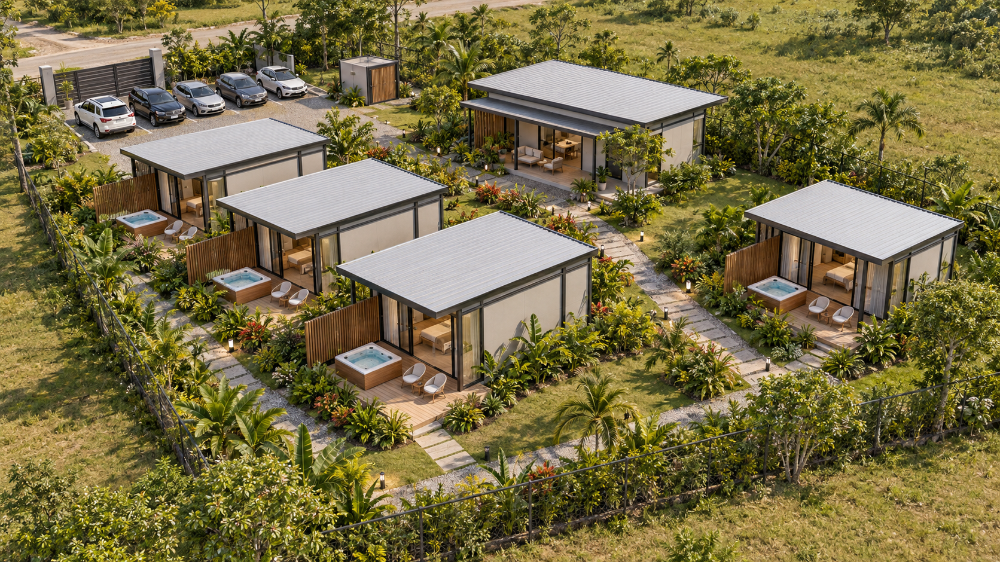

Diseñar el espacio.
Entender la inversión.
Un laboratorio de módulos, etapas y rentabilidad. Cambia una decisión y observa cómo se mueve todo el proyecto.
Perímetro y orientación exactos por verificar.
Concepto arquitectónico
Estructura metálica, sombra y terrazas privadas con jacuzzi.

Plano de implantación
Clic izquierdo o derecho: girar 90° · Arrastra para mover · Ctrl+C / Ctrl+V: duplicar · Suprimir: borrar
Detalle del alojamiento
Baño, cocina y jacuzzi privados en cada unidad
Comprobación espacial
Programa y etapas
Costos incluyen provisiones| Unidad | Interior bruto | Terraza | Huéspedes | Abre en | Inversión estimada |
|---|
Supuestos de análisis
Con qué datos se hizo el análisis, en tres casos: pesimista, normal y optimista.
Análisis de escenarios
Cómo se llegó a la propuesta: desde el mercado actual, un cambio a la vez.
¿Es buena inversión?
Cinco preguntas con semáforo en el caso normal: verde = bien, amarillo = ajustado, rojo = mal.
¿Cuánto se invierte, cuándo y con qué plata?
La obra va por etapas. La gráfica muestra lo invertido, lo prestado por el banco, la deuda que queda y lo que ponen los dueños.
Gráfica: inversión acumulada, crédito recibido y deuda pendiente en 20 años
Un mes normal: cuánto entra y cuánto sale
A lo que se vende se le restan los gastos por venta (B), los fijos (C) y las cuotas del crédito (D).
Tabla: flujo de caja de un mes normal
¿Y si viene más o menos gente?
El mismo proyecto en los casos pesimista, normal y optimista.
¿Qué modelo de cabaña conviene?
5 × 5 contra 7 × 5, arrendado para 2 o para 4 huéspedes, en los tres casos.
Flujo de caja anual
Año por año: lo que se vende, lo que queda, lo que se paga al banco y lo que se lleva la familia. Es la información que pide un banco o un asesor financiero.
Gráfica: flujo de caja anual (lo que queda cada año después de gastos y cuotas)
Tabla: flujo de caja por año (millones de pesos)
Año 0 = compra del lote. Retiros: lo que sobra cada año, dejando siempre 3 meses de gastos y cuotas en reserva. Valores antes del impuesto de renta. Pasa el cursor sobre las barras para ver el detalle.
Resumen de inversión
Costo estimado del Airbnb
Costo estimado de la casa de tus padres
Obras comunes y servicios
Estimados directos con los valores del simulador, pendientes de cotización. Lote, obras comunes, diseños y contingencia se contabilizan aparte en la inversión total.